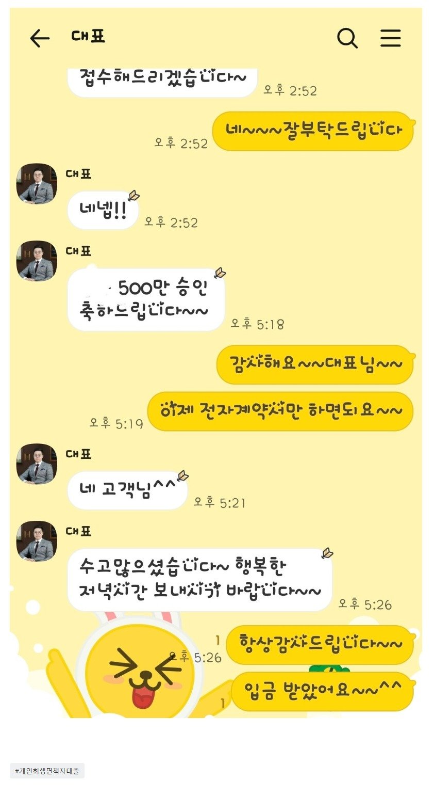

[개인회생자대출] 2250만원 채무통합 승인후 500만 추가대출 승인 / 김용혁 이사님 감사합니다^^
재직형태: 직장인 재직기간:5년 사대보험 가입여부:유 소득:연2800만원 신용등급 : KCB597
채무내역: 저축은행 1건 2500만원
필요한서류: 신분증. 초본 건강보험득실확인서.건강보험 납부확인서.통장입출금3개월내역서
10월30일 대부업 3건으로 2250만원을 저축은행으로 통합해줄때도 너무감사했는데 긴급자금이 필요해 김용혁대표님 또 연락드려 친철하게 상담해주시고 부결이 있었지만 신경써주셔서 대출받을수있게 되었습니다
너무너무 감사합니다

https://cafe.naver.com/cityman88/309498